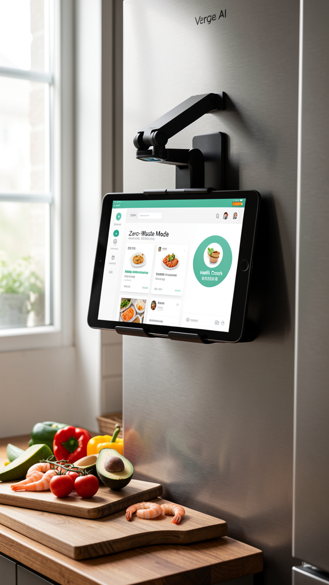
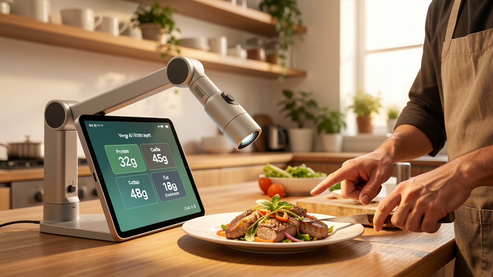
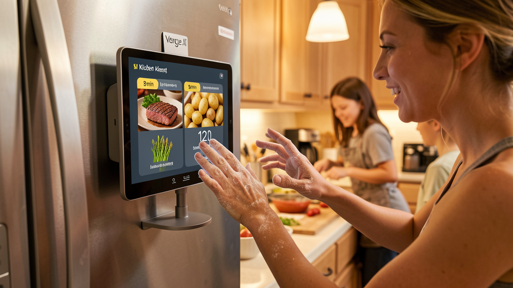

🍳 AI Kitchen Agent🍳 AI 智能厨房助理🍳 AI 智能廚房助理
Intelligent Sous-Chef — Deep reasoning + visual perception for the modern kitchen智能副厨 — 深度推理 + 视觉感知，专为现代厨房打造智能副廚 — 深度推理 + 視覺感知，專為現代廚房打造
Vision-First, Hands-Free视觉优先，解放双手視覺優先，解放雙手

Mockup: Fridge Mount
Mockup: Nutrition Scan
Mockup: Voice ControlOpen the fridge, point the camera at near-expiry ingredients — AI identifies and suggests "rescue recipes" in seconds. Half an onion + soft eggplant + bacon = hearty ratatouille.打开冰箱，对准即将过期的食材拍摄 — AI 瞬间识别并推荐「拯救食谱」。半个洋葱 + 软茄子 + 培根 = 丰盛炖菜。打開雪櫃，對準即將過期的食材拍攝 — AI 瞬間識別並推薦「拯救食譜」。半個洋蔥 + 軟茄子 + 煙肉 = 豐盛燉菜。
Cooking steak + asparagus + potatoes simultaneously? Say "Set 5 mins for potatoes, 3 mins for asparagus, 8 mins for steak" — AI tracks all timers and gives voice cues: "30 seconds to flip the steak!"同时烹饪牛排、芦笋和土豆？只需说「土豆5分钟，芦笋3分钟，牛排8分钟」 — AI 追踪所有计时器并语音提醒：「30秒后翻牛排！」同時烹調牛排、蘆筍和薯仔？只需說「薯仔5分鐘，蘆筍3分鐘，牛排8分鐘」 — AI 追蹤所有計時器並語音提醒：「30秒後翻牛排！」
Place a plate under the camera — volumetric AI estimates portion size and instantly displays "~650 kcal, P:35g C:48g F:22g". Automatically syncs with Apple Health / Fitbit.将盘子放在摄像头下 — 体积 AI 估算份量并即时显示「~650 千卡，蛋白质:35g 碳水:48g 脂肪:22g」。自动同步 Apple Health / Fitbit。將碟放在鏡頭下 — 體積 AI 估算份量並即時顯示「~650 千卡，蛋白質:35g 碳水:48g 脂肪:22g」。自動同步 Apple Health / Fitbit。
Agent detects running low on olive oil, auto-adds to shopping list synced to your phone. Asks "Shall I find the best price nearby?" — compares local supermarket prices.AI 检测到橄榄油快用完了，自动加入与手机同步的购物清单。询问「需要我查找附近的最优价格吗？」 — 比较本地超市价格。AI 檢測到橄欖油快用完了，自動加入與手機同步的購物清單。詢問「需要我查找附近的最優價格嗎？」 — 比較本地超市價格。
Camera scan fridge contents → AI cross-references with pantry → suggests recipes using what's about to expire. Reduce food waste intelligently.摄像头扫描冰箱内容物 → AI 与储藏室交叉比对 → 推荐使用即将过期食材的食谱。智能减少食物浪费。鏡頭掃描雪櫃內容物 → AI 與儲藏室交叉比對 → 推薦使用即將過期食材的食譜。智能減少食物浪費。
Hands covered in raw chicken? Just speak. "How much salt did I add?" — AI responds instantly. Zero-tap design philosophy.双手沾满生鸡肉？只需说话。「我加了多少盐？」 — AI 即时回应。零触控设计理念。雙手沾滿生雞肉？只需說話。「我加了多少鹽？」 — AI 即時回應。零觸控設計理念。
Physical mechanical shutter covers the camera when not in active use. Red LED indicator when camera is active. No software-only privacy theater.物理机械快门在不使用时覆盖摄像头。摄像头激活时红色LED指示灯。拒绝纯软件层面的隐私表演。物理機械快門在不使用時覆蓋攝像頭。攝像頭激活時紅色LED指示燈。拒絕純軟件層面的私隱表演。
Visible light + NIR (near-infrared) dual camera. Visible identifies produce type — NIR estimates freshness, ripeness, and sugar content. Know your avocado is perfect before cutting.可见光 + NIR（近红外）双摄像头。可见光识别食材类型 — 近红外估算新鲜度、成熟度和糖分含量。切开前就知道牛油果是否完美。可見光 + NIR（近紅外）雙攝像頭。可見光識別食材類型 — 近紅外估算新鮮度、成熟度和糖分含量。切開前就知道牛油果是否完美。
| Display显示屏顯示屏 | 7"–10" IPS touchscreen, 1280×800, anti-fingerprint coating |
| Camera System摄像系统攝像系統 | Dual cameras: 12MP RGB (main food scan) + 5MP NIR (freshness analysis), adjustable dual-joint arm |
| AI ComputeAI算力AI算力 | RK3588 (6 TOPS NPU) for standalone OR ESP32-S3 (satellite to Home Hub) |
| SLM Inference小模型推理小模型推理 | Qwen3-2B W8A8 @ NPU (11.5 t/s) — recipe reasoning, step-by-step navigation |
| Computer Vision计算机视觉計算機視覺 | OpenCV + custom food recognition model @ NPU — 600+ ingredient types |
| NIR Sensor近红外传感器近紅外傳感器 | 730–1100nm spectral — freshness, ripeness, sugar content estimation |
| Speech (ASR)语音识别語音識別 | SenseVoice Small @ NPU (~150ms) — Cantonese + Mandarin |
| Speech (TTS)语音合成語音合成 | CosyVoice @ CPU (~300ms) — step-by-step recipe guidance |
| Connectivity连接連接 | WiFi 6 + BLE 5.3 + WebSocket Agent Protocol |
| Mounting安装方式安裝方式 | Magnetic fridge mount / under-cabinet bracket / standalone counter stand |
| Ingredient Database食材数据库食材數據庫 | 600+ ingredients, 10,000+ recipes — local SQLite, updated via encrypted OTA |
| Nutrition Accuracy营养准确度營養準確度 | ±5% for known ingredients (with volume estimation), ±15% for novel foods |
| Audio音频音頻 | Far-field mic array (4-mic) + front speaker (3W) |
| Privacy隐私保护私隱保護 | Physical mechanical privacy shutter + red LED active indicator — all processing local |
Every ingredient deserves to be eaten. AI helps you use what you have, not buy more.每一种食材都值得被吃掉。AI帮你利用已有的食材，而非购买更多。每一種食材都值得被吃掉。AI幫你利用已有的食材，而非購買更多。
Voice-first. Camera as an eye, not a remote. The kitchen should be tactile, not digital.语音优先。摄像头是眼睛而非遥控器。厨房应该是触觉的，而非数字的。語音優先。攝像頭是眼睛而非遙控器。廚房應該是觸覺的，而非數字的。
Know what you eat without scanning barcodes. The most natural way to track nutrition — just cook.无需扫描条码即可了解你吃的食物。跟踪营养最自然的方式 — 只需烹饪。無需掃描條碼即可了解你吃的食物。跟蹤營養最自然的方式 — 只需烹飪。
Instant-on from standby. No boot delays, no "updating" messages. The kitchen doesn't wait.从待机状态即时启动。无启动延迟，无"正在更新"信息。厨房从不等待。從待機狀態即時啟動。無啟動延遲，無"正在更新"信息。廚房從不等待。